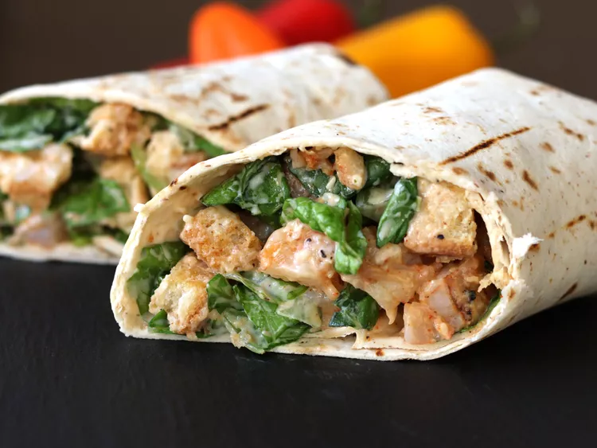

Grilled Shrimp Caesar Wraps

These grilled shrimp Caesar wraps are filled with juicy grilled shrimp, seasoned with smoked paprika and garlic, and wrapped in a tortilla with crisp Romaine lettuce, Caesar dressing, and crouton pieces. It's a delightful mix of flavors and textures in every bite.
Ingredients
- 1 pound raw shrimp
- 2 tablespoons olive oil
- 1 teaspoon granulated garlic
- 1 teaspoon smoked paprika
- 1/4 tsp salt and freshly ground black pepper
- 4 (10 inch) low-carb flour tortillas
- 2 cups chopped Romaine lettuce
- 1 cup croutons, coarsely chopped
- 1/2 cup creamy Caesar yogurt dressing, such as Bolthouse Farms®
Directions
- Combine shrimp, olive oil, smoked paprika, granulated garlic, salt, and pepper in a large bowl. Toss to coat; let marinate for 15 minutes.
- Preheat an outdoor grill or grill pan for high heat. Thread shrimp onto skewers if using an outdoor grill. Grill shrimp until they are bright pink on the outside and the meat is opaque, 2 to 3 minutes per side; remove to a plate. Warm tortillas on the grill for about 10 to 15 seconds per side.
- Chop shrimp into 1/2-inch pieces and place into a large bowl. Add lettuce, croutons, and Caesar dressing. Divide mixture down the center of each tortilla. Fold in the sides of the tortillas and then roll up tightly from the bottom. Cut wraps in half diagonally and serve.